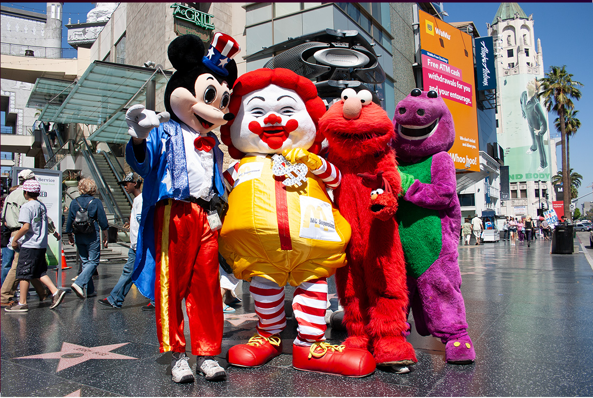
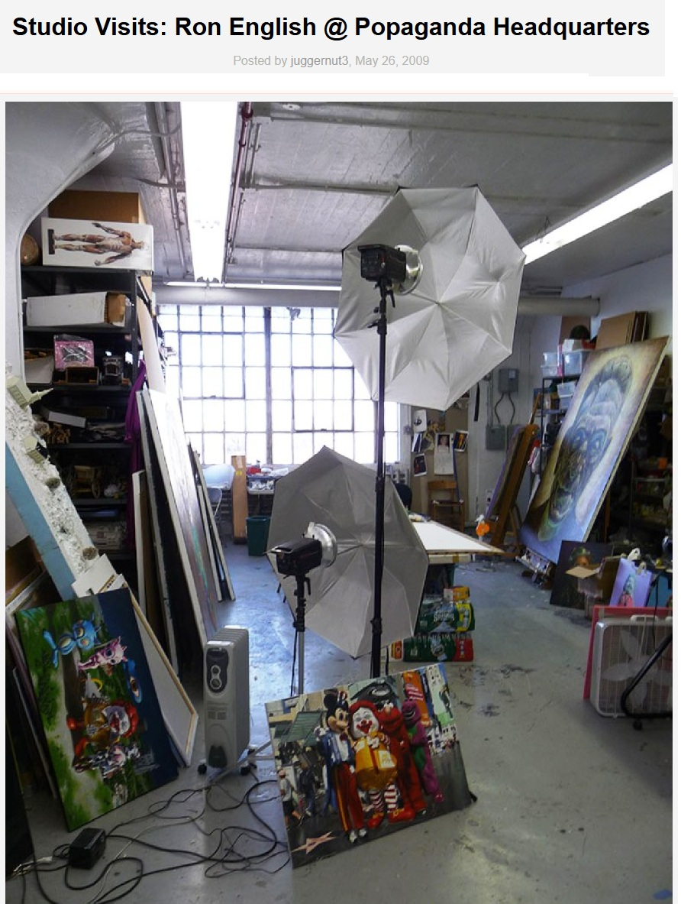
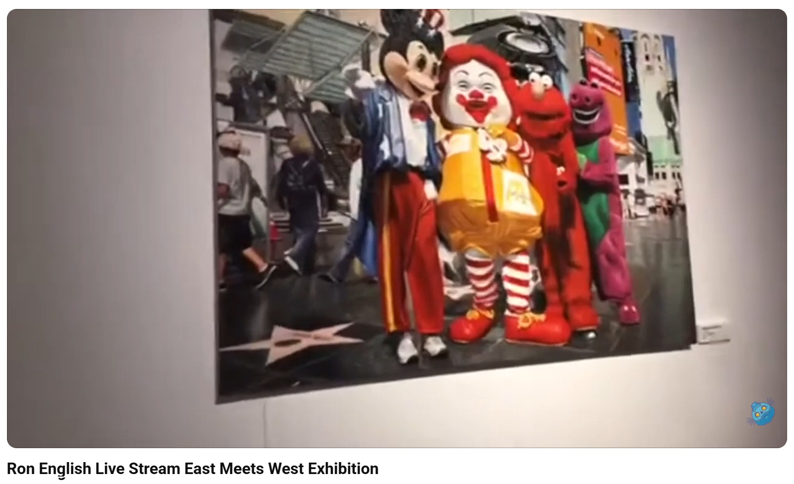

Exhibitions
East Meets West Exhibition, May 6–14, 2017.
Notes
Also known as American Mascots.
This work appears at 3:13 in The Toy Chronicle’s YouTube video Ron English Live Stream East Meets West Exhibition.
This work appears in studio photographs published by Arrested Motion in its 2009 studio visit to Ron English’s Popaganda headquarters.
Ancillary Documentation




